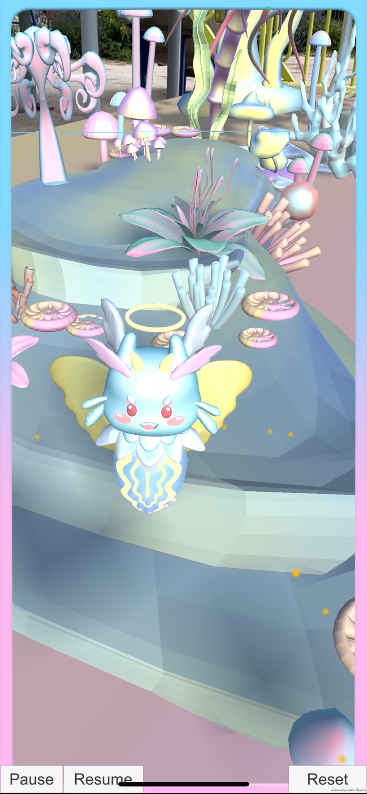
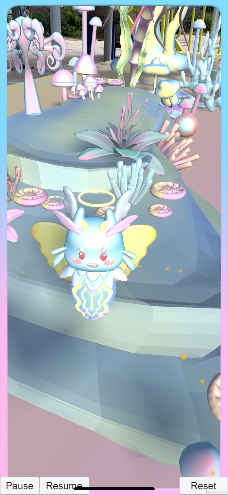

Seraphic Seas:AR Utopia
It is a genderless utopian underwater world of sea slugs and sea angels. All creatures and plants in the scene are hermaphroditic or genderless. Made through Unity AR Foundation and ARKit.
Inspired by the habits of sea slug edible seaweed. There are three juvenile sea angels in the scenario, and players need to find and pick seaweed to feed them to help them evolve into genderless humanoids. During this process the player interacts with the sea angels, allowing the player to reflect on the binary nature of gender and provide them with psychological healing. We used AI to generate healing music for the game's soundtrack.
这是一个由海蛞蝓和海天使组成的无性别乌托邦式水下世界。场景中的所有生物和植物都是雌雄同体或无性别的。 用户可以看到一个自然形成的异世界花园，场景由有机形态构建而成。形态各异的外星植物的曲线和螺旋充满了流动感，柔和色彩的运用营造出超现实的梦幻效果。角色设计以海天使为主体，并加入了一些雌雄同体生物的特征（海蛞蝓、珊瑚和海星分别对应蓝色、紫色和粉色角色），具有可爱的外形和童话般梦幻的视觉风格。 灵感来源于海蛞蝓食用海藻的习性。场景中有三只幼年海天使，玩家需要寻找并采摘海藻喂养它们，帮助它们进化成无性别的人形生物。在这个过程中，玩家会与海天使互动，让玩家反思性别的二元性，并为他们提供心理治疗。我们使用人工智能为游戏配乐生成治愈音乐。
✨这个游戏通过 Unity AR Foundation 和 ARKit 制作而成。请观看右下角的视频～✨
 
